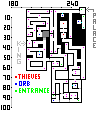
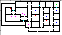
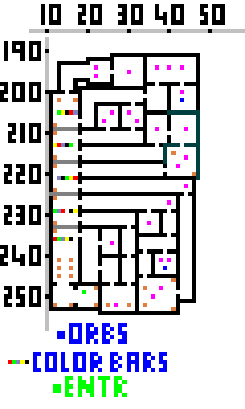
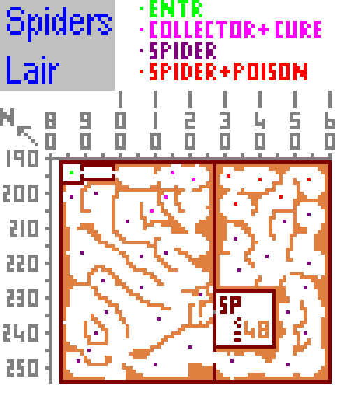
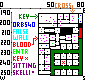
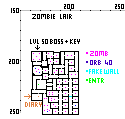

Exkordon
Go in town gate and behind the first guard house on the right and down the ladder into Exkordon Sewers.
Entering the Sewers proceed to the Thieves Guild Master 232,15 pay guard the membership fee ( 100g ) and talk to Guild Master to get your first Exkordon quests. The rewards from the guild master quests are required in order to do Orb Runs and complete the other quests in Exkordon.
Note. Always be sure to have a scroll of recall with you, handy to get out of places you shouldn't be when a guard is outside.
If you get caught by the guards breaking the law you will have your pass revoked, be fined and have to run out of Town fast before guards kill you
Punish The Robbers
The first quest is to kill the robbers operating without guild permission,
go past Ruby, and at the next junction you will be at the center of 2
sections of robbers, Lvls 35 & 39, the next junction has 43 & 47. Move into the junction cautiously
turning to the NE you will see a lvl 35 newbie robber. the object here is
to get a strike in at least 1 section. The robbers are DW,
so attack in the day.
Report to Guild Master and receive your Lock pick
The next quest he asks you to do is to punish a merchant who has not paid his protection fees by burning his stock of barrels next to the Palace. This is pretty simple, just don't get caught by the Young Guard. Stand by the barrels with a lighted torch in your hand and plan your path so you finish next to entrance, set mode to Fast. Once the guard is out of sight, use the torch with the barrels, and once all are alight, get out of there . You will notice a gate in the wall there, you must be an Arch to go through it, it leads to the Brannington Forest and Lake, and on to the town of Brannington.
Report to Guild Master and receive Sewer Key 1
Secret Trader Agreement
The third quest is to get a secret Price Fixing Agreement from Culds shop.
Wait until after midnight when the shopkeepers have retired for the night,
Wait for guard to pass and then use your lock pick on the metal door. Snatch
the paper and get out of there before the guard comes back A Lookout
can be helpful to let you know when coast is clear...
If caught, Run for your Life
Report to Guild Master and receive Sewer Key 2
You now have the necessary keys and lock pick for Orb Runs
Gold Lock Pick
The Fourth quest he asks you to do is to go and get a golden lock pick from
the Greenling King (He lost it there). Head NW from the ladder, then
go NE, you will eventually come across him, kill him and take the lock pick.
Report to Guild Master and receive the Palace key.
The Palace

■
Note Locations
■
Palace Staff
■
Guards
■
Secret Doors
(Key Required)
■
Entrance from
Sewer
You are now able to go into the Palace from the Sewers, avoiding those
pesky door guards. (Ladder at Top right corner of Sewer Map )
Go
up ladder into the palace talk to & bribe everybody you come
across, follow their instructions carefully.
Once you have
found the three scrolls, go back to the Tavern outside the gate and give
them to the officer there.
If you should accidentally open a door to a guard, run back to a room
with a secret door and go through it. The guards will not follow you and will
go back to their posts (this works in many areas of the game).
If you run into the Governor's double in Palace do not kill him, it's a 2.5K
fine if you do and guards will attack you on sight!!!
The Library
In the library (enter by picking lock) go to the far left, you will see 5 sections.
In each section there are tables with books, read the books.
Some books have in the Title or Authors name a color.
Read the books moving from Left to Right.
You should end up with five colors.
In the last section
there is a secret door, go through and down the ladder to Library
Underground.
You will see a series of multicolor bars on the floor, the color you walk
across corresponds to the colors in the books
Walk across the wrong color and you are teleported to the beginning and the colors are reset, you will have to read books again.
Go all the way through to section 5 and take the key off the last statue (30,195)
On your way you will pass two level 30 Orb spawners in sections 2 & 4 (Blue dots on map).
Go back to library and in the second alcove from the left there is a bookcase with an iron grill over it. Open it and read Knowledge of Ages by Ishtar to complete quest and gain experience. (Lag out or recall as if guard see's you leaving you'll have to run for your life)
The Alchemist DON'T do this till you are level 30 even with an escort.!
Around the corner NW of Culds shop is the alchemist. He needs you to get some red spider poison for him.
The entrance ■ is behind the Tavern outside the City Gate.
Make sure you have plenty of cure poison pots just in case you get spider bit! These can be looted from the collectors you kill as you first go in. Spiders move quickly, so keep your wits about you.
Kill a Red Spider
there are 5 of them all way in back, get
a leaf with some poison from body.
Return and give poison to the Alchemist and receive...
level 30... a Security Potion (Nice)
below lvl 30... a Combo Pot (Bummer)
(HC.. Sorry, it won't do anything for you, but you can auction it for lots of gold)
There is also a lvl 48 max spawner here.
Skellie Lair ( you should be about lvl 40 )

When you enter the room and touch the seated skeleton it crumbles to dust. You need Blood to revive it.
Go down the ladder and to the blood room, do not enter the room, use door as a choke point as there are 7 skellies in there!. Get bowls of blood from dead skellies, you will need 4.
Proceed to Green KEY area and after killing guards revive the seated skellie nearest the arrow on map (41,194). Kill him for green key.
Proceed through green door and revive seated skellie (Red X in center rooms (63,240) Kill him and get Red Key. There are also 3 Lvl 40 Orbs to be had in this area.
Proceed to last room in red area and get Steel Cross from one of the 3 skellies there. (False wall to Lvl 40 Orb (2) room there too) Go back up to entrance and revive the seated Governor he will tell you he needs his cross to rest in peace, give it to him.
Zombie Lair

Zombie lair is relatively easy, until you get to the lvl 50 Boss at the end who has the Diary Room key.
There are 4 Lvl 40 Orbs here, and a book in the locked diary room which tells of the Governors murder and the discovery of the Bone Tower.